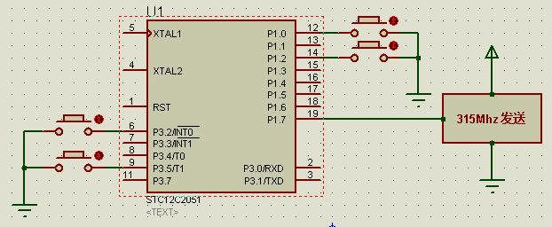
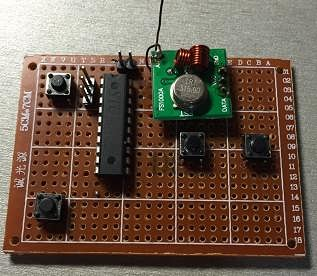
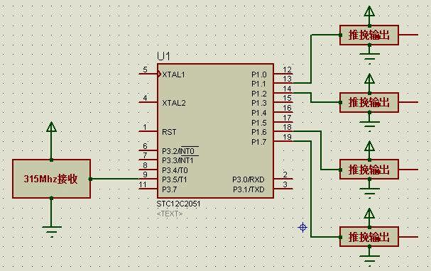
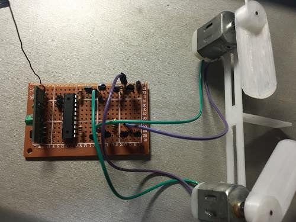
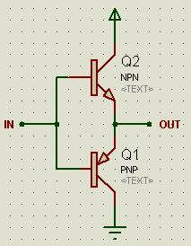

还记得小时候，对遥控车非常感兴趣，又很好奇，于是总是买最最便宜的遥控车（20元），然后把里面的遥控电路拆出来。。。没想到如今我完全能够自己制作遥控收发模块了。
市面上比较通用的方案是使用PT2262和PT2272来收发，但是这样有很多局限性。比如最多就4通道，又比如只能输出0或1，而不能输出模拟量（PWM）。
我用的是315Mhz无线模块和51单片机来实现的，这样可以自己定制通信协议，另外，想要几通道就能够有几通道。还可以实现调速~~
为了演示，我就做了最最常用的四通道+0/1输出的遥控收发模块。
===============阶段一：发射模块的设计与实现==============
发射模块上要有四个微动开关，也就是常说的“前后左右”按钮。单片机检测这四个微动开关的状态，如果发现某个开关被按下，就控制315Mhz无线模块发送相应的数据。
我的设计是这样的：

至于之所以选取这么几个引脚，完全是因为实际焊接的时候方便。。。
微动开关一端接单片机引脚，一端接地，这样的话，由于单片机内部上拉电阻的存在，所以没有被按下时检测到的是高电平，被按下后检测到的就是低电平。
代码分为types.h、RF315.h、RF315.c和main.c四个文件，其中types.h、RF315.h和RF315.c这三个文件可以在《针对51单片机的315Mhz无线模块协议与软件的改进》一文中获得，只是需要修改一下发射引脚，即把
#define SEND_PIN P3^4
改为
#define SEND_PIN P1^7
main.c代码如下：
#include "RF315.h"
#include "reg51.h"
#define CODE_FRONT 0x01
#define CODE_BACK 0x02
#define CODE_LEFT 0x04
#define CODE_RIGHT 0x08
sbit KEY_FRONT=P3^2;
sbit KEY_BACK=P3^5;
sbit KEY_LEFT=P1^0;
sbit KEY_RIGHT=P1^2;
void main()
{
uint8 t_code;
while(true)
{
t_code=0;
if(!KEY_FRONT)
t_code|=CODE_FRONT;
if(!KEY_BACK)
t_code|=CODE_BACK;
if(!KEY_LEFT)
t_code|=CODE_LEFT;
if(!KEY_RIGHT)
t_code|=CODE_RIGHT;
if(t_code)
RF315_send(t_code);
}
}
四个键分别占用字节的低四位，当其中任意一个键按下时，315Mhz发送信号。
实际焊接的电路如下：

=============阶段二：接收模块的设计与实现============
接收模块需要使用315Mhz的接收模块来接收无线电信号，然后由单片机解析，然后控制三极管组成的驱动电路。
我设计的电路如下：

至于推挽输出电路，其实可以有很多种实现办法，暂时留着，接下来讲解。
代码分为types.h、RF315.h、RF315.c和main.c四个文件，其中types.h、RF315.h和RF315.c这三个文件可以在《针对51单片机的315Mhz无线模块协议与软件的改进》一文中获得，由于原来的文件中接收引脚刚好是P3^5，所以不需要修改。
main.c代码如下：
#include "RF315.h"
#include "reg51.h"
#define RECV_TIMEOUT 50000
#define MOTOR_1_P_MASK 0x01
#define MOTOR_1_N_MASK 0x02
#define MOTOR_2_P_MASK 0x04
#define MOTOR_2_N_MASK 0x08
sbit MOTOR_1_P=P1^1;
sbit MOTOR_1_N=P1^2;
sbit MOTOR_2_P=P1^6;
sbit MOTOR_2_N=P1^7;
code uint8 MAP[16]={0x0F,0x0A,0x05,0x0F,0x06,0x0E,0x0D,0x06,
0x09,0x0B,0x07,0x09,0x0F,0x0A,0x05,0x0F};
void main()
{
uint8 t_code;
while(true)
{
if(!RF315_recv(&t_code,RECV_TIMEOUT))
t_code=0;
t_code=MAP[t_code&0x0f];
MOTOR_1_P=t_code&MOTOR_1_P_MASK;
MOTOR_1_N=t_code&MOTOR_1_N_MASK;
MOTOR_2_P=t_code&MOTOR_2_P_MASK;
MOTOR_2_N=t_code&MOTOR_2_N_MASK;
}
}
因为发送端传来的数据只有低4位有效，总共有16种情况，所以可以建立一张映射表，表的键就是接收到的数据的低4位，表的值就是4个输出端的电平。这张映射表可以修改，所以也称作策略表。
焊接的实际电路如图：

==================阶段三：推挽电路的设计==================
推挽电路，说简单点，就是把信号变为功率。比如说，51单片机输出1时，由于内部上拉能力很弱，只能输出几uA，而输出0时，也只能灌入20mA的电流，不然就会烧坏。这样小的电流几乎不可能驱动一般的用电器。于是需要推挽电路，单片机输出1，那么推挽电路就把输出端与VCC相连，单片机输出0，那么推挽电路就把输出端与GND相连。于是，单片机只要发号施令就行了~
推挽电路可以直接使用L298N这样的电机驱动芯片。不过太贵了，而且一般做个玩具车，用个130电机，不需要这么强的功率。所以我直接用PNP和NPN三极管做。原理图如下：

当在输入端接高电平时，NPN三极管导通，而PNP三极管则相当于断路，于是输出端就相当于直接和VCC相连。
当在输入端接低电平时，NPN三极管断路，而PNP三极管导通，于是输出端就相当于直接和GND相连。
于是呢，我就傻傻地把单片机的引脚接到了推挽电路的输入端，结果就是电机不会转。。。为啥呀？？？我用电压表测了输出端，输出4.6v左右没错呀。
后来我才知道，原来三极管的特性并没有这么简单（也怪我们是软件学院，虽然大一讲过计算机的硬件原理，但是只是把三极管简化为一个可以控制的开关，只有导通和截止两种状态）。三极管在导通时，其基极电流和发射极电流之间是有一个比例关系的。这个比例系数就叫做放大倍数。
假设我用的NPN三极管的放大倍数为100倍，那么，当NPN的基极流入1mA，NPN的发射极就流出100mA。而51单片机上拉能力很弱，上拉电路只有几uA，那么就算放大一百倍，也驱动不了130电机！！
本来以为完了，电路废了，悲伤地睡觉去了。躺在床上灵机一动：我可以给单片机的引脚外接一个上拉电阻来提高上拉电流啊！于是今天一试，果断成功！
于是针对51单片机设计的推挽电路就是这样的：

当单片机输出1时，推挽电路的输入端相当于通过一个1k的电阻（由于单片机内部上拉电阻远大于1k，所以并联之后可以认为还是1k）接到VCC，输入端最大可以流过5V/1K欧=5mA的电路，放大100倍能达到500mA，够用了。
而当单片机输出0时，因为最大可以灌入20mA电流，放大100倍可以达到2A，早就够用了~